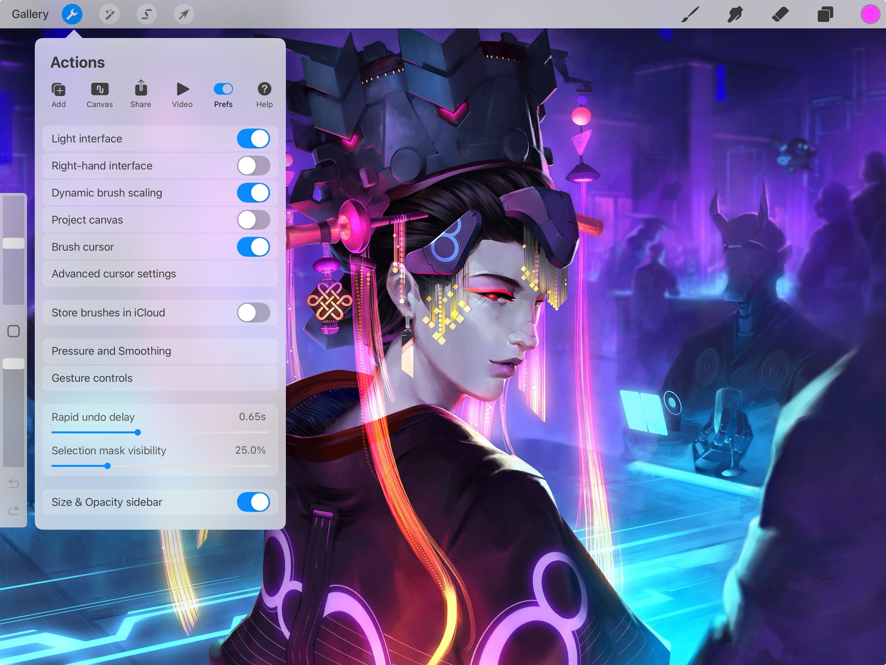
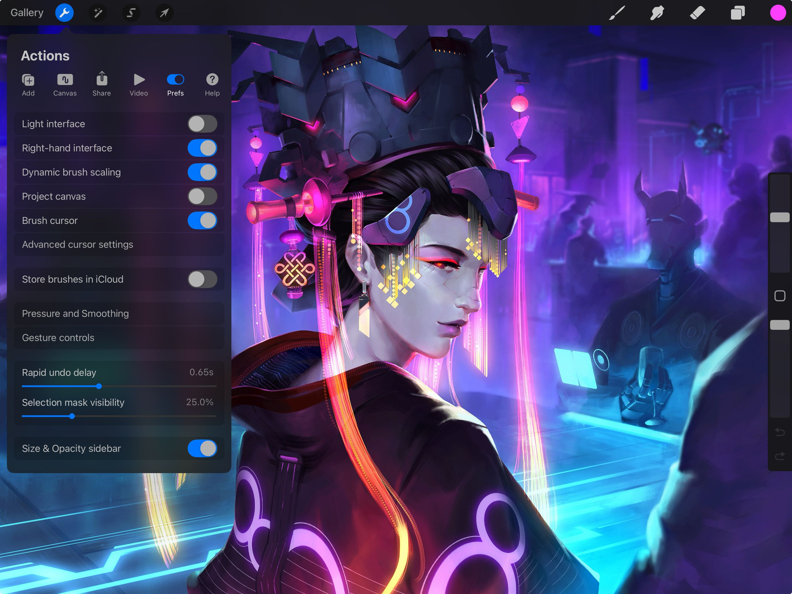
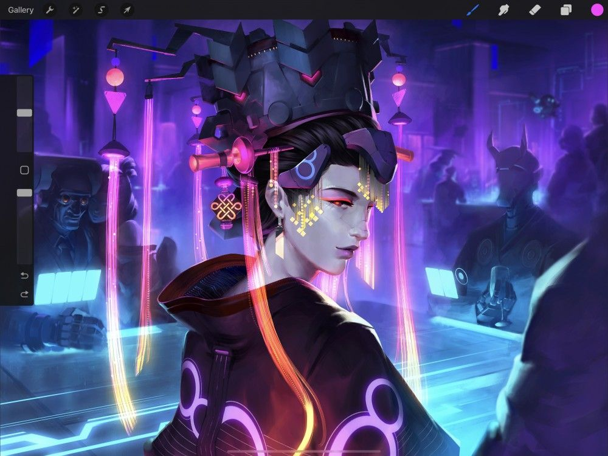
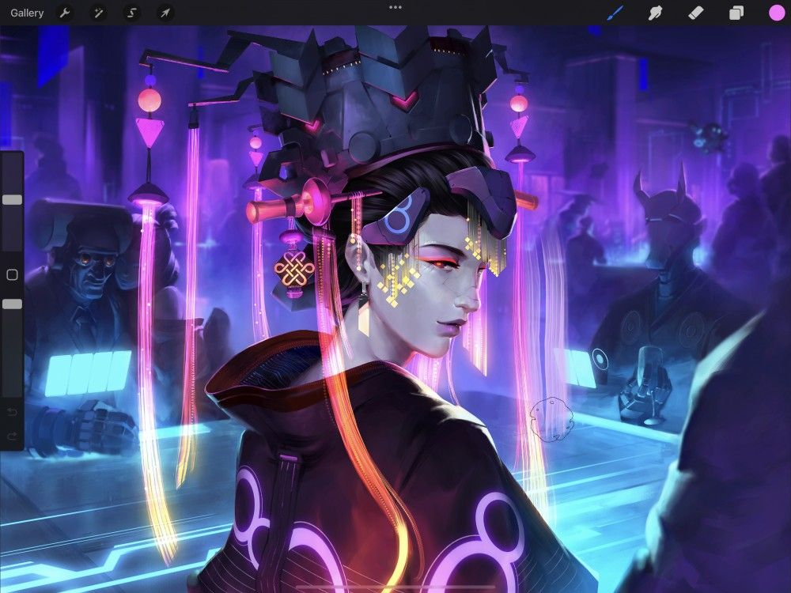
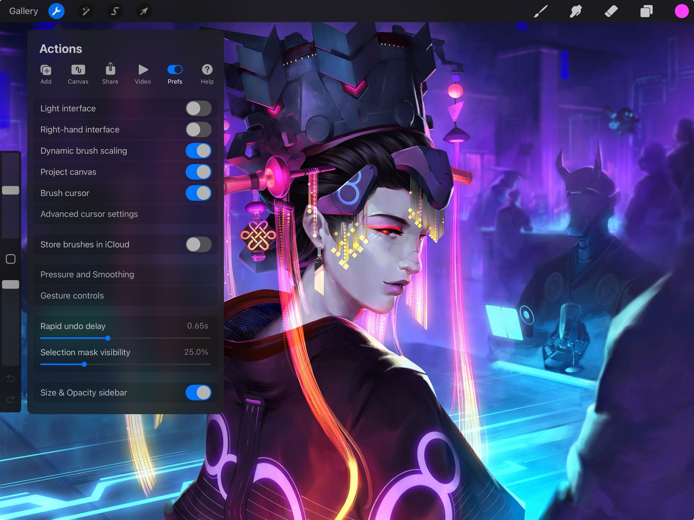

📖 Đã dịch sang tiếng Việt. Thuật ngữ chuyên môn giữ tiếng Anh — rê chuột để xem nghĩa (tooltip).
Interface
Khám phá giao diện tinh gọn của Procreate.
Bố cục giao diện
Giao diện tối giản của Procreate có ba phần, được thiết kế để tập trung vào tác phẩm của bạn.

Công cụ vẽ (trên cùng bên phải)
Trên thanh menu phía trên bên phải, bạn sẽ tìm thấy mọi thứ cần để bắt đầu: Paint (vẽ), Smudge (nhòe/pha màu), Erase (tẩy), tạo Layers (lớp) tác phẩm và chọn Color (màu).
Phác, mực và vẽ bằng hàng trăm cọ Paint (vẽ) mượt mà và đa dụng. Sắp xếp Brush Library (thư viện cọ), nhập cọ tùy chỉnh và chia sẻ tác phẩm do bạn tự tạo.
Pha trộn Smudge (nhòe) tác phẩm và hòa màu, dùng Brush Library (thư viện cọ) đa dụng để tạo ra nhiều hiệu ứng khác nhau.
Sửa lỗi và tinh chỉnh tỉ mỉ bằng Erase (tẩy). Truy cập Brush Library (thư viện cọ) để khớp cọ tẩy với phong cách tác phẩm của bạn.
Layers (lớp) cho phép bạn vẽ các đối tượng chồng lấn mà không làm hỏng phần đã vẽ. Bạn có thể di chuyển, chỉnh sửa, đổi màu và tinh chỉnh các thành phần hoàn toàn tự do.
Chọn, điều chỉnh và hòa sắc Color (màu) trong tác phẩm. Làm điều này bằng nhiều tùy chọn giao diện khác nhau để phù hợp với cách làm việc của bạn.
Thanh bên (bên trái)
Các công cụ chỉnh sửa đều nằm trên thanh bên trái. Dùng thanh này để điều chỉnh kích thước và opacity (độ đục) của cọ. Đồng thời truy cập Undo (hoàn tác), Redo (làm lại) và Eyedropper (ống hút màu) qua nút Modify (chỉnh sửa).
Tăng kích thước đầu cọ để có nét vẽ dày hơn bằng cách kéo thanh trượt trên lên. Làm đầu cọ nhỏ hơn và tạo đường nét mảnh hơn bằng cách kéo thanh trượt trên xuống.
Để điều chỉnh nhanh hơn, chạm vào bất kỳ điểm nào trên thanh trượt để nhảy tới vị trí đó.
Để điều chỉnh tinh hơn, giữ thanh trượt và kéo ngang tay. Không nhấc tay, kéo lên hoặc xuống. Bạn sẽ thấy thanh trượt di chuyển theo từng bước nhỏ hơn.
Chạm vào nút Modify (chỉnh sửa) hình vuông trên thanh bên để mở Eyedropper (ống hút màu). Công cụ này cho phép bạn lấy màu trực tiếp từ tác phẩm.
Bạn cũng có thể giữ nút Modify (chỉnh sửa) và chạm bất kỳ đâu để chọn màu bằng Eyedropper (ống hút màu).
Bạn cũng có thể lập trình lại nút Modify (chỉnh sửa) để kích hoạt công cụ khác, giúp tạo lối tắt tùy chỉnh riêng của mình.
Để tăng hoặc giảm opacity (độ đục) của cọ từ trong suốt đến đặc, kéo thanh trượt dưới lên hoặc xuống. Để điều chỉnh opacity chính xác hơn, giữ và kéo thanh trượt theo chiều ngang.
Chạm mũi tên trên để Undo (hoàn tác) thao tác vừa làm. Chạm mũi tên dưới để Redo (làm lại). Một thông báo sẽ hiện ở đầu khung vẽ để xác nhận thao tác.
Chạm và giữ một trong hai mũi tên để Undo/Redo (hoàn tác/làm lại) nhanh nhiều thao tác.
Công cụ chỉnh sửa (trên cùng bên trái)
Thanh menu phía trên bên trái có mọi tính năng bạn cần để điều chỉnh phức tạp cho tác phẩm.
Gallery (thư viện) là nơi bạn sắp xếp và quản lý các tác phẩm. Bạn có thể tạo canvas (khung vẽ) mới, nhập ảnh và chia sẻ tác phẩm đã hoàn thành.
Menu Actions (hành động) có mọi tính năng thực dụng để chèn, chia sẻ, điều chỉnh canvas (khung vẽ) và các thành phần bên trong.
Adjustments (Điều chỉnh)
Thêm những điểm chốt hoàn thiện quan trọng bằng hiệu ứng ảnh chuyên nghiệp trong menu Adjustments (điều chỉnh). Điều chỉnh màu phức tạp trở nên nhanh và đơn giản.
Selections (vùng chọn)
Selections (vùng chọn) cho phép bạn tách riêng bất kỳ phần nào của ảnh bằng bốn phương pháp chọn đa dụng. Còn có nhiều tùy chọn nâng cao để tinh chỉnh vùng chọn.
Biến đổi (Transform)
Transform (biến đổi) cho phép bạn kéo giãn, di chuyển và thao tác ảnh để chỉnh sửa nhanh chóng. Từ thu phóng đơn giản đến Warp (bẻ cong) đa dụng, Transform cho bạn sức mạnh điều chỉnh tác phẩm chính xác.
Tùy chỉnh giao diện
Tinh chỉnh giao diện Procreate theo sở thích nhìn và cảm nhận của bạn.
Giao diện Tối / Sáng
Giao diện Procreate cung cấp hai chế độ hiển thị.
Dark Mode (chế độ tối) là giao diện than chì tinh tế, giữ sự tập trung vào tác phẩm. Light Mode (chế độ sáng) có độ tương phản cao, lý tưởng để vẽ trong môi trường sáng, nắng.
Chạm Actions (hành động) → Prefs (tùy chỉnh) → Light Interface (giao diện sáng) để chuyển sang Light Mode (chế độ sáng).


Thanh bên Trái / Phải
Thanh bên được thiết kế để tay trái dễ với tới khi bạn vẽ bằng tay phải.
Tùy chọn Right-hand interface (giao diện cho tay phải) dành cho ai thích thanh bên ở phía bên kia của khung vẽ.
Chạm Actions (hành động) → Prefs (tùy chỉnh) → Right-hand interface (giao diện tay phải) để đổi bên.

Thanh bên di động
Điều chỉnh chiều cao thanh bên trên giao diện.
Kéo một ngón tay từ mép giao diện qua nút Modify (chỉnh sửa). Thanh bên sẽ trượt ra từ cạnh khung vẽ. Sau đó bạn có thể kéo lên hoặc xuống tới chiều cao mong muốn.
Tính năng này hoạt động ở cả hai chế độ Left-hand (tay trái) và Right-hand (tay phải).

Con trỏ cọ
Xem hình dáng cọ trước khi bạn tạo nét vẽ.
Khi bật Brush cursor (con trỏ cọ), đường bao hình cọ sẽ hiện ra mỗi lần bạn chạm khung vẽ, giúp đánh giá chính xác kích thước và tầm với của nét vẽ.
Chạm Actions (hành động) → Prefs (tùy chỉnh) → Brush cursor (con trỏ cọ) để bật/tắt Brush Cursor (con trỏ cọ).

Ẩn giao diện
Làm tác phẩm với một cọ và không bị phân tâm.
Muốn giao diện lùi lại để bạn tập trung vào tác phẩm? Chạm 4 ngón tay lên màn hình để bật Full Screen (toàn màn hình). Khung vẽ sẽ tràn màn hình và mọi thành phần giao diện sẽ mờ dần.
Để hiện lại giao diện, chạm 4 ngón tay lần nữa, hoặc chạm vào chỉ báo Full Screen (toàn màn hình) ở góc trên bên trái.


Chiếu khung vẽ
Làm chi tiết tinh tế trong Procreate mà vẫn bao quát được toàn cảnh.
Kết nối màn hình thứ hai qua cáp hoặc AirPlay để chiếu riêng khung vẽ toàn màn hình. Vừa làm vừa tận hưởng không giao diện, không thu phóng, không gián đoạn.
Chạm Actions (hành động) → Prefs (tùy chỉnh) → Project canvas (chiếu khung vẽ) để chiếu tác phẩm lên màn hình thứ hai.


Still have questions?
If you didn't find what you're looking for, explore our video resources on YouTube or contact us directly. We’re always happy to help.